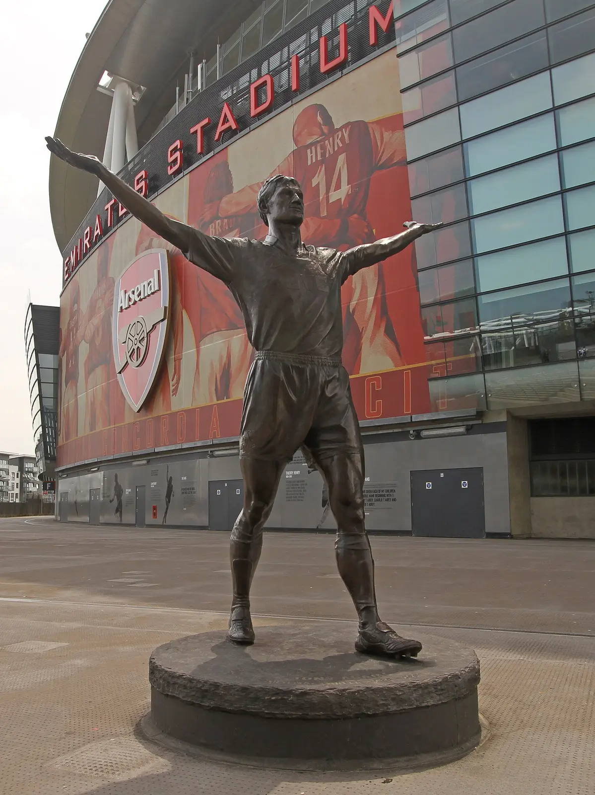
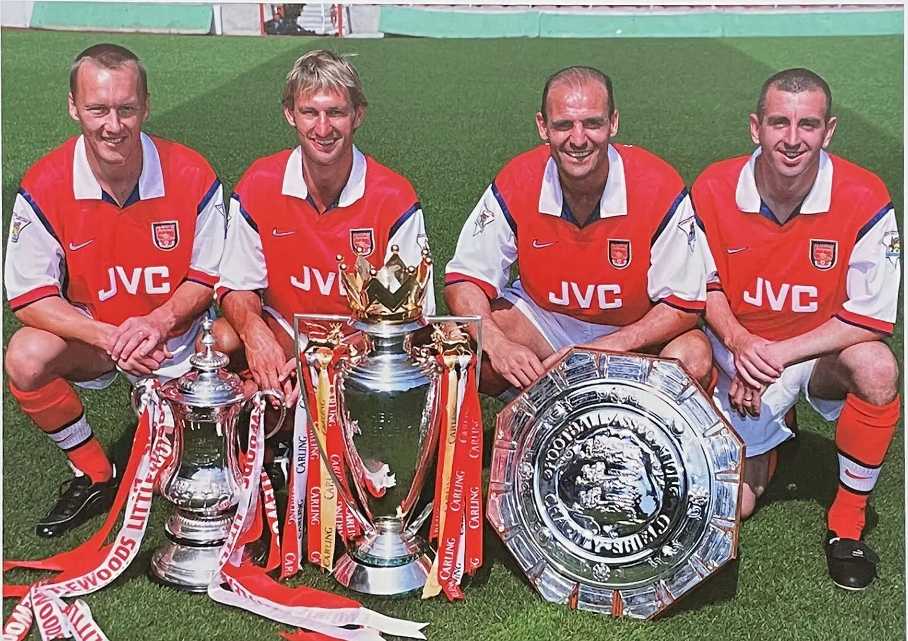
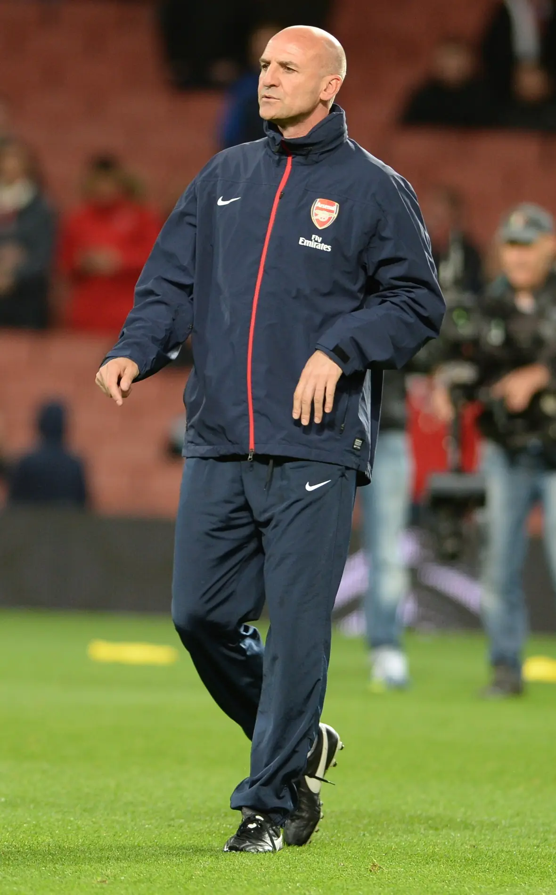

Arsenal · Steve Bould
Before the Arms
Were Raised.
Một đời đứng phía sau những khoảnh khắc người khác được nhớ tới, nhưng là lý do mọi thứ phía trước có thể đứng vững.
Bên ngoài Emirates có một người đàn ông bằng đồng đang dang rộng hai tay về phía bầu trời, lồng ngực hướng về khán đài, đôi chân giữ nguyên tư thế của một khoảnh khắc đã xảy ra từ rất lâu nhưng Arsenal vẫn chưa bao giờ muốn để nó trôi hoàn toàn vào quá khứ.
Người đàn ông đó là Tony Adams.

Bức tượng giữ lại cú chạy về phía North Bank, cú đỡ ngực, cú sút chân trái tung lưới Everton và hai cánh tay mở ra giữa Highbury trong buổi chiều Arsenal chính thức trở thành nhà vô địch nước Anh dưới thời Arsène Wenger. Đó là một hình ảnh đủ lớn để đi qua nhiều thế hệ, đủ trọn vẹn để một câu lạc bộ chọn đúc nó thành đồng, đủ đẹp để ngay cả những đứa trẻ sinh ra sau khi Highbury không còn nữa vẫn có thể nhìn vào và hiểu rằng ngày đó đã từng có một điều rất quan trọng xảy ra.
Nhưng tượng đồng chỉ giữ được khoảnh khắc sau cùng.
Nó không thể giữ lại vài giây trước đó, khi trái bóng còn nằm gần giữa sân, khi Adams chưa bắt đầu lao lên phía trước, khi chưa có cú đỡ ngực, chưa có tiếng lưới rung và chưa ai biết pha bóng đang diễn ra sẽ trở thành một phần ký ức lớn tới mức nào.
Ở vài giây đó, Steve Bould ngẩng đầu.
Ông nhìn thấy Adams đang chạy vào khoảng trống phía sau hàng phòng ngự Everton rồi đưa trái bóng vượt qua tất cả, nhẹ vừa đủ để người đồng đội lâu năm đón lấy, chính xác vừa đủ để một trung vệ vốn dành cả đời bảo vệ khung thành phía sau có thể lao về phía khung thành trước mặt.
Adams kết thúc pha bóng, Highbury bùng nổ và một biểu tượng được sinh ra. Còn Steve Bould, như rất nhiều lần trong sự nghiệp, lùi khỏi trung tâm khung hình sau khi đã làm phần việc khiến mọi thứ phía trước trở nên có thể.
Trong bài thơ “Questions from a Worker Who Reads”, Bertolt Brecht nhìn vào những cổng thành, những chiến thắng và những công trình mà sử sách chỉ giữ lại tên của các vị vua, rồi hỏi ai mới là người thật sự đã dựng chúng lên. Bóng đá cũng thường kể lịch sử theo cách đó. Nó nhớ người ghi bàn rõ hơn người mở ra đường bóng, nhớ đôi tay giơ cao lâu hơn ánh mắt đã nhìn thấy khoảng trống, nhớ khoảnh khắc chiến thắng nhưng đôi khi để những con người đã dành cả trận đấu, cả mùa giải, thậm chí cả một đời làm cho khoảnh khắc đó có thể xảy ra trôi dần về phía sau.
Steve Bould thuộc về phần lịch sử thường bị giữ lại ở phía sau như vậy.
Ông không có một bức tượng bên ngoài Emirates, không có một danh xưng đủ lớn để đứng thay cho cả câu lạc bộ, cũng hiếm khi là gương mặt đầu tiên hiện lên khi người ta nhắc tới hàng phòng ngự nổi tiếng của Arsenal. Trong những bức ảnh cũ, Adams thường đứng ở giữa với chiếc băng đội trưởng, Dixon và Winterburn tạo nên hai đường biên quen thuộc, còn Bould hiện diện bằng cách ít đòi hỏi ánh mắt hơn, cao lớn, điềm tĩnh, gần như không cần một cử chỉ rộng để người ta hiểu ông đang làm gì.
Nhưng một hàng phòng ngự không trở thành huyền thoại chỉ nhờ những gương mặt dễ nhớ.
Nó cần những người biết đứng đúng nơi trước khi nguy hiểm xuất hiện, biết lùi lại nửa bước để đồng đội có thể bước lên, biết khi nào phải lao ra và khi nào chỉ cần giữ nguyên vị trí để đối phương tự chạy vào nơi không còn lối thoát. Nó cần bốn con người hiểu rằng phòng ngự không phải bốn cá nhân cùng cố gắng ngăn một bàn thua, mà là bốn cơ thể học cách chia sẻ cùng một nhịp thở, cùng một khoảng cách và đôi khi cùng một ý nghĩ trước cả khi bất kỳ ai kịp nói thành lời.
Steve Bould hiểu thứ ngôn ngữ không lời đó.
Nếu Tony Adams là tiếng hét kéo cả hàng thủ cùng bước lên, Bould là sự im lặng ngay trước tiếng hét, khoảnh khắc mọi người đã nhìn nhau và biết mình phải đi về đâu. Adams cho hàng phòng ngự một gương mặt, một giọng nói và một thủ lĩnh để đi theo. Bould cho nó sự bình tĩnh, thứ cảm giác rằng phía bên cạnh luôn có một người đã nhìn thấy điều mình chưa kịp nhận ra.
Ông không phòng ngự bằng sự hấp tấp của một người luôn muốn trở thành nhân vật cứu nguy cuối cùng. Bould đọc trận đấu bằng sự điềm tĩnh, giữ vị trí bằng thứ kỷ luật không cần phô bày và biến những tình huống đáng lẽ phải trở nên nguy hiểm thành những pha bóng đơn giản tới mức người xem dễ quên rằng sự đơn giản đó chỉ tồn tại vì ông đã nhìn thấy mọi thứ sớm hơn đối thủ.
Có những hậu vệ được nhớ bởi cú tắc bóng diễn ra ngay trước khung thành. Bould thường làm công việc của mình sớm hơn khoảnh khắc đó.
Ông đứng đúng nơi để đường chuyền không thể được thực hiện, dịch chuyển đúng nhịp để tiền đạo phải nhận bóng trong tư thế quay lưng, bước lên cùng đồng đội để một pha thoát xuống trở thành việt vị trước khi khán đài kịp nín thở. Cái hay trong bóng đá của Bould nằm ở những điều không xảy ra, những khoảng trống không kịp mở, những cuộc đối đầu không cần xuất hiện và những phút bình yên mà người ta thường chỉ hiểu giá trị sau khi chúng biến mất.
Đó là nghịch lý của một hậu vệ như ông. Khi làm đúng mọi thứ, ông khiến chính công việc của mình gần như không còn được nhìn thấy.
Người ta hiếm khi đứng trước một căn nhà vững chãi rồi nghĩ về những điểm chịu lực nằm sâu sau bức tường. Họ nhìn cửa sổ, mái vòm, mặt tiền và ánh sáng đổ xuống nền nhà, những thứ đẹp đẽ thu hút ánh mắt trước tiên. Chỉ khi một vết nứt xuất hiện, khi một góc bắt đầu nghiêng xuống, người ta mới nhớ rằng vẻ đẹp phía trên luôn cần một thứ gì đó âm thầm gánh lấy trọng lượng bên dưới.
Steve Bould là phần gánh trọng lượng đó của Arsenal.

Khi ông tới từ Stoke City vào năm 1988, George Graham đang xây Arsenal thành một đội bóng hiểu rằng niềm kiêu hãnh có thể bắt đầu từ việc từ chối để đối phương bước qua mình. Hàng phòng ngự đó không chỉ mạnh vì họ chơi cạnh nhau lâu, mà vì theo thời gian, khoảng cách giữa những con người ấy dường như không còn được đo bằng mét cỏ. Nó được đo bằng thói quen, bằng sự tin tưởng và bằng hàng ngàn buổi tập nơi mỗi bước lên, mỗi lần xoay người, mỗi cánh tay giơ cao đều được lặp lại cho tới khi trở thành bản năng.
Bould đứng cạnh Adams trong những mùa giải Arsenal giành chức vô địch, trong những buổi chiều một bàn thắng là đủ, trong những phút cuối khi cả sân vận động hiểu rằng đối phương có thể tiếp tục đưa bóng tới nhưng sẽ không dễ gì tìm được đường xuyên qua. Ông thuộc về một hàng thủ bị gọi là cứng nhắc, nhàm chán, thậm chí lỗi thời, nhưng cũng chính hàng thủ đó khiến những đội bóng đối diện dần mất kiên nhẫn, bởi muốn đánh bại Arsenal trước tiên phải tháo rời một tập thể đã học cách chuyển động như một cơ thể duy nhất.
Ngày nay, khi xem lại những đoạn phim cũ, ta dễ bị hút vào tiếng hò hét, những cánh tay cùng giơ lên và vẻ dữ dội của Adams. Bould thì khác. Ông thường chỉ có mặt ở đúng nơi, quay đầu kiểm tra người phía sau, dịch sang một bước, đôi khi đưa ra một lời ngắn đủ để mọi thứ trở lại trật tự. Nhưng có lẽ chính vì vậy mà những người từng đứng cạnh ông hiểu giá trị đó rõ hơn bất kỳ ai trên khán đài. Sự tin tưởng trong một hàng phòng ngự không nằm ở việc đồng đội sẽ luôn cứu mình sau sai lầm, mà ở cảm giác họ sẽ nhìn thấy nguy hiểm cùng lúc với mình, để sai lầm không cần xảy ra.
Bould không chỉ là một viên đá trong bức tường đó. Ông là người hiểu vì sao bức tường đứng được.
Giá trị của một điểm chịu lực không nằm ở việc nó được nhìn thấy, mà ở việc tất cả những gì phía trên vẫn còn đứng vững.
Vì vậy, khi đôi chân không còn đưa ông bước ra sân mỗi cuối tuần, Arsenal vẫn tìm thấy giá trị trong đôi mắt và những điều ông biết. Có những cầu thủ sau khi giải nghệ mang theo ký ức của các trận đấu. Bould mang theo cả bản thiết kế, hiểu từng đường nối, từng khoảng cách và từng nguyên tắc giúp một tập thể giữ được hình dạng khi sức ép bắt đầu đẩy mọi người rời xa nhau.
Ông trở thành người thầy gần như theo cùng cách mình từng là cầu thủ, ít lời, kỹ lưỡng và không quá quan tâm liệu phần việc của mình có được nhìn thấy ngay lập tức hay không.
Ở học viện, Bould đứng trước những cầu thủ còn quá trẻ để hiểu hết cái tên Arsenal có thể trở nên nặng tới mức nào rồi dạy họ những điều cả sự nghiệp ông từng được xây dựng trên đó. Không phải mọi đứa trẻ đi qua tay Bould đều trở thành trung vệ, và di sản của một người thầy cũng không thể chỉ được tính bằng số học trò bước lên đội một. Điều ông truyền lại rộng hơn một vị trí trên sân.
Đó là ý thức về khoảng cách, là thói quen nhìn qua vai trước khi trái bóng tìm tới, là sự hiểu rằng tài năng có thể mở ra cánh cửa nhưng kỷ luật mới giúp một cầu thủ đứng vững sau khi bước qua nó. Đó còn là việc biết lúc nào phải lên tiếng, lúc nào cần lùi lại, khi nào một pha bóng đòi hỏi sự can đảm và khi nào điều can đảm nhất chỉ đơn giản là không rời khỏi vị trí đã được giao.
Dưới sự dẫn dắt của Bould, đội trẻ Arsenal giành FA Youth Cup năm 2009. Chiếc cúp đó là phần hữu hình nhất của công việc diễn ra mỗi ngày phía sau những cánh cửa ít người nhìn thấy, trong những buổi sáng lạnh trên sân tập, trong từng động tác được sửa lại và trong những lần một cầu thủ trẻ bị yêu cầu thực hiện cùng một điều thêm lần nữa cho tới khi cơ thể ghi nhớ thay cho đầu óc.

Jack Wilshere sau này nhắc tới Bould như một trong những người thầy quan trọng của những năm ở học viện. Francis Coquelin từng thừa nhận khi mới tới Arsenal, anh gần như chưa biết cách phòng ngự và Bould là người dạy mình những điều căn bản. Những lời như vậy không dựng nên một bức tượng, nhưng chúng cho thấy di sản của một người thầy thường sống ở đâu, trong những thói quen đã trở thành tự nhiên tới mức chính học trò đôi khi không còn nhớ mình học chúng từ khi nào.
Có những người sau khi rời sân tìm một sân khấu mới để tiếp tục được nhìn thấy. Bould chọn đứng bên rìa sân tập, nơi ánh mắt của ông hướng về những người khác.
Điều đó không có nghĩa ông thiếu tham vọng hay không muốn được công nhận. Có lẽ ông chỉ đã quá quen với một loại giá trị không cần lập tức hiện ra trước đám đông. Một hậu vệ giỏi phải chấp nhận rằng pha bóng đẹp nhất của mình đôi khi chỉ là việc trái bóng không bao giờ tìm được đường tới khu vực nguy hiểm. Một người thầy giỏi cũng phải chấp nhận rằng nhiều điều mình gieo xuống sẽ chỉ hiện ra nhiều năm sau, trong một cầu thủ đứng đúng vị trí, trong một quyết định bình tĩnh giữa sức ép, hoặc trong cách một đứa trẻ từng sợ hãi bước ra sân và nhận ra mình thật sự thuộc về nơi đó.
Di sản như vậy không dễ được chụp lại trong một tấm ảnh, không có một khoảnh khắc duy nhất để đóng khung và cũng không có tư thế rõ ràng để đúc thành tượng. Nó sống bằng cách phân tán chính mình vào những con người khác.
Có một phần Steve Bould trong hàng phòng ngự Arsenal năm xưa, trong cách bốn người cùng bước lên và biến một đường chuyền của đối thủ thành hành động vô nghĩa. Có một phần ông trong thế hệ học viện đã nâng FA Youth Cup, trong những cầu thủ trẻ bước ra sân với kỹ thuật được mài giũa bằng kỷ luật, rồi trong những năm ông đứng cạnh Arsène Wenger trên băng ghế huấn luyện, tiếp tục phục vụ một câu lạc bộ đã thay đổi rất nhiều nhưng vẫn nhận ra giá trị của người hiểu nền móng cũ.
Bould chưa bao giờ là người níu Arsenal đứng lại trong quá khứ. Giống như đường chuyền trước Everton năm 1998, ông hiểu rằng điều đẹp nhất quá khứ có thể làm là đưa trái bóng về phía trước.
Pha bóng đó vì vậy không chỉ là một chi tiết nhỏ trong khoảnh khắc nổi tiếng của Tony Adams. Nó là hình ảnh rất chính xác cho cách Bould tồn tại trong lịch sử Arsenal. Ông đứng phía sau, nhìn thấy điều sắp xảy ra rồi đặt trái bóng vào con đường để người khác bước tới nơi ánh sáng đang chờ.
Có thể một cầu thủ khác đã chuyền ngang. Có thể một hậu vệ khác đã giữ bóng, chờ trận đấu trôi thêm vài giây trong buổi chiều Arsenal đã kiểm soát hoàn toàn. Nhưng Bould nhìn thấy Adams.
Không phải Adams mà cả thế giới biết, trung vệ, đội trưởng, người đứng giữa hàng phòng ngự và bảo vệ khung thành phía sau. Ông nhìn thấy một người đồng đội đang chạy về phía khung thành đối phương, đang bước ra khỏi vai trò quen thuộc và lao vào một khoảnh khắc chưa ai biết sẽ trở thành vĩnh viễn.
Chỉ những người thật sự hiểu nhau mới có thể nhìn thấy điều đó.
Họ đã đứng cạnh nhau quá lâu, cùng kéo hàng thủ bước lên, cùng chịu đựng những phút cuối, cùng bảo vệ những tỷ số mong manh, tới mức khi Adams bắt đầu một cú chạy hoàn toàn khác với mọi điều ông thường làm, Bould không cần thêm thời gian để tự hỏi liệu có nên tin hay không.
Ông chỉ chuyền.
Trái bóng bay qua hàng phòng ngự Everton như một đường nối giữa hai thời đại, từ hàng thủ cũ của George Graham tới nhà vô địch mới của Arsène Wenger, từ những năm tháng Arsenal được định nghĩa bởi khả năng không để thủng lưới tới một kỷ nguyên nơi chính trung vệ đội trưởng có thể lao lên ghi bàn trong một pha bóng đầy tự do.
Bould là người thực hiện đường nối đó.
Ông không xuất hiện trong tư thế ăn mừng được giữ lại mãi mãi, nhưng nếu đường chuyền của ông đi chậm hơn một chút, mạnh hơn một chút, hoặc đơn giản không bao giờ được thực hiện, bức tượng bên ngoài Emirates hôm nay đã không mang cùng hình dạng.
Có lẽ bóng đá luôn cần những con người như Steve Bould nhiều hơn mức nó nhớ tới họ, những người không nhất thiết tạo ra khoảnh khắc cuối cùng nhưng hiểu phải làm gì để khoảnh khắc có thể được sinh ra, những người không đứng ở trung tâm bức ảnh nhưng là lý do mọi người trong ảnh đứng đúng chỗ, những người không cần câu chuyện phải mang tên mình bởi họ đã hiện diện trong phần cấu trúc giữ câu chuyện không vỡ xuống.
Khi nhìn lại hàng phòng ngự nổi tiếng đó, người ta sẽ gọi tên Tony Adams trước tiên. Điều đó tự nhiên, bởi lịch sử luôn cần một gương mặt để đại diện cho cả một thời đại. Nhưng ở bên cạnh người thủ lĩnh luôn phải có một người hiểu trọng lượng của những gì cả hai đang cố giữ lại, một người mà chỉ cần biết ông còn đứng đó, người bên cạnh có thể bước lên thêm một bước mà không sợ khoảng trống phía sau bị bỏ mặc.
Steve Bould là người đó.
Ông đứng cạnh Adams khi Arsenal bảo vệ khung thành, đứng phía sau những cầu thủ trẻ khi họ bắt đầu học cách bảo vệ tương lai của mình, rồi đứng bên đường biên khi câu lạc bộ bước vào một thời đại khác, vẫn ít lời, vẫn điềm tĩnh, vẫn mang theo cảm giác rằng nhiệm vụ quan trọng hơn việc ai sẽ được nhớ tới sau cùng.
Bên ngoài Emirates, hai cánh tay bằng đồng vẫn dang rộng trước bầu trời London. Mỗi ngày có những người dừng lại dưới bức tượng, nhìn lên, chụp ảnh rồi kể lại bàn thắng trước Everton như một trong những khoảnh khắc tóm gọn lịch sử Arsenal. Trong câu chuyện đó, cái tên Steve Bould có thể chỉ xuất hiện trong vài chữ ngắn ngủi, rằng ông là người thực hiện đường chuyền.

Nhưng đôi khi, vài chữ đó chứa đựng cả một đời.
Trước khi Adams bắt đầu chạy, Bould đã ngẩng đầu. Trước khi Highbury đứng dậy, ông đã nhìn thấy khoảng trống. Trước khi hai cánh tay được giơ lên và khoảnh khắc đó được giữ mãi trong hình hài tượng đồng, Steve Bould đã lặng lẽ đưa trái bóng đi, rồi đứng lại phía sau như thể công việc của mình chưa từng cần một kết thúc nào khác.